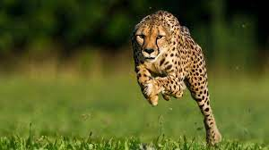
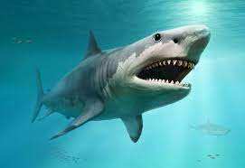

Cheetah

The cheetah (Acinonyx jubatus) is a large cat with a tawny to creamy white or pale buff fur that is
marked
with evenly spaced, solid black spots. Its head is small and rounded, with a short snout and black
tear-like
facial streaks. It reaches 67–94 cm (26–37 in) at the shoulder, and the head-and-body length is between
1.1
and 1.5 m (3 ft 7 in and 4 ft 11 in). Adults weigh between 21 and 72 kg (46 and 159 lb). It is the
fastest
land animal, capable of running at 80 to 98 km/h (50 to 61 mph); it has evolved specialized adaptations
for
speed, including a light build, long thin legs and a long tail.
Back 2 top
Shark

Sharks are a group of elasmobranch fish characterized by a cartilaginous skeleton, five to seven gill
slits
on the sides of the head, and pectoral fins that are not fused to the head. Modern sharks are classified
within the clade Selachimorpha (or Selachii) and are the sister group to the Batoidea (rays and kin).
Back 2 top
Dog

The dog (Canis familiaris[4][5] or Canis lupus familiaris[5]) is a domesticated descendant of the wolf.
Also
called the domestic dog, it is derived from extinct Pleistocene wolves,[6][7] and the modern wolf is the
dog's nearest living relative.[8] The dog was the first species to be domesticated[9][8] by humans.
Hunter-gatherers did this, over 15,000 years ago in Germany,[7] which was before the development of
agriculture.
Back 2 top